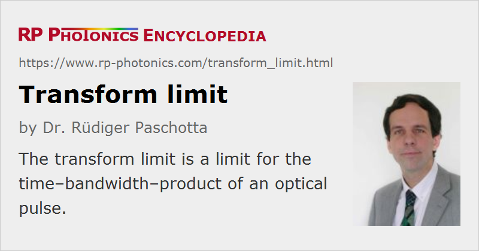

Transform Limit
Definition: a limit for the time–bandwidth–product of an optical pulse
How to cite the article; suggest additional literature
Author: Dr. Rüdiger Paschotta
In ultrafast optics, the transform limit (or Fourier limit, Fourier transform limit) is usually understood as the lower limit for the pulse duration which is possible for a given optical spectrum of a pulse. A pulse at this limit is called transform limited. The condition of being at the transform limit is essentially equivalent to the condition of a frequency-independent spectral phase (which leads to the maximum possible peak power), and basically implies that the time–bandwidth product is at its minimum and that there is no chirp. The minimum time–bandwidth product depends on the pulse shape, and is e.g. ≈ 0.315 for bandwidth-limited sech2-shaped pulses and ≈ 0.44 for Gaussian-shaped pulses. (These values hold when a full-width-at-half-maximum criterion is used for the temporal and spectral width.)
For a given pulse duration, transform-limited pulses are those with the minimum possible spectral width. This is important e.g. in optical fiber communications: a transmitter emitting close to transform-limited pulses can minimize the effect of chromatic dispersion during propagation in the transmission fiber, and thus maximize the possible transmission distance.
Many mode-locked lasers, particularly soliton lasers, are able to generate close to transform-limited pulses. During propagation e.g. in transparent media, phenomena such as chromatic dispersion and optical nonlinearities can cause chirp and thus can lead to non-transform-limited pulses. Such pulses may be brought back to the transform limit (and thus temporally compressed) by modifying their spectral phase, e.g. by applying a proper amount of chromatic dispersion. This is called dispersion compensation. For not too broad spectra, compensation of second-order dispersion is often sufficient, whereas very broad spectra may require compensation also of higher-order dispersion in order to approach the transform limit.
Questions and Comments from Users
Here you can submit questions and comments. As far as they get accepted by the author, they will appear above this paragraph together with the author’s answer. The author will decide on acceptance based on certain criteria. Essentially, the issue must be of sufficiently broad interest.
Please do not enter personal data here; we would otherwise delete it soon. (See also our privacy declaration.) If you wish to receive personal feedback or consultancy from the author, please contact him e.g. via e-mail.
By submitting the information, you give your consent to the potential publication of your inputs on our website according to our rules. (If you later retract your consent, we will delete those inputs.) As your inputs are first reviewed by the author, they may be published with some delay.
See also: spectral phase, pulse duration, time–bandwidth product, dispersion, dispersion compensation, The Photonics Spotlight 2007-10-11, The Photonics Spotlight 2008-06-13
and other articles in the category light pulses
|  |
If you like this page, please share the link with your friends and colleagues, e.g. via social media:
These sharing buttons are implemented in a privacy-friendly way!